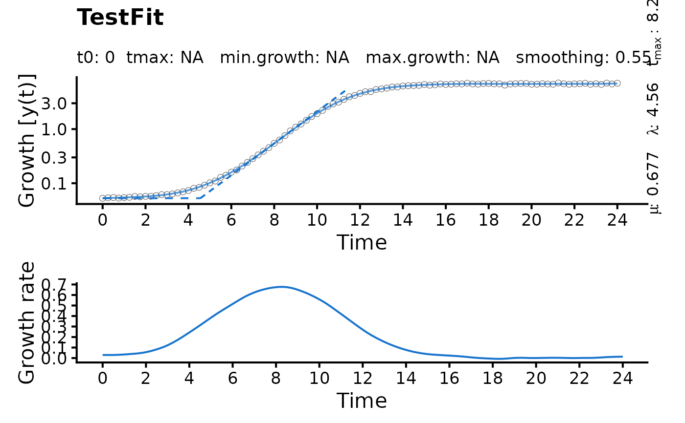

growth.gcFitSpline performs a smooth spline fit on the dataset and determines
the highest growth rate as the global maximum in the first derivative of the spline.
Usage
growth.gcFitSpline(
time,
data,
gcID = "undefined",
control = growth.control(biphasic = FALSE)
)Arguments
- time
Vector of the independent variable (usually time).
- data
Vector of dependent variable (usually: growth values).
- gcID
(Character) The name of the analyzed sample.
- control
A
grofit.controlobject created withgrowth.control, defining relevant fitting options.- biphasic
(Logical) Shall
growth.gcFitSplinetry to extract growth parameters for two different growth phases (as observed with, e.g., diauxic shifts) (TRUE) or not (FALSE)?
Value
A gcFitSpline object. The lag time is estimated as the intersection between the
tangent at the maximum slope and the horizontal line with \(y = y_0\), where
y0 is the first value of the dependent variable. Use plot.gcFitSpline to
visualize the spline fit and derivative over time.
- time.in
Raw time values provided to the function as
time.- data.in
Raw growth data provided to the function as
data.- raw.time
Filtered time values used for the spline fit.
- raw.data
Filtered growth values used for the spline fit.
- gcID
(Character) Identifies the tested sample.
- fit.time
Fitted time values.
- fit.data
Fitted growth values.
- parameters
List of determined growth parameters.
A: Maximum growth.dY: Difference in maximum growth and minimum growth.mu: Maximum growth rate (i.e., maximum in first derivative of the spline).tD: Doubling time.t.max: Time at the maximum growth rate.lambda: Lag time.b.tangent: Intersection of the tangent at the maximum growth rate with the abscissa.mu2: For biphasic growth: Growth rate of the second growth phase.tD2: Doubling time of the second growth phase.lambda2: For biphasic growth: Lag time determined for the second growth phase.t.max2: For biphasic growth: Time at the maximum growth rate of the second growth phase.b.tangent2: For biphasic growth: Intersection of the tangent at the maximum growth rate of the second growth phase with the abscissa.integral: Area under the curve of the spline fit.
- spline
smooth.splineobject generated by thesmooth.splinefunction.- spline.deriv1
list of time ('x') and growth ('y') values describing the first derivative of the spline fit.
- reliable
(Logical) Indicates whether the performed fit is reliable (to be set manually).
- fitFlag
(Logical) Indicates whether a spline fit was successfully performed on the data.
- fitFlag2
(Logical) Indicates whether a second growth phase was identified.
- control
Object of class
grofit.controlcontaining list of options passed to the function ascontrol.
Details
If biphasic = TRUE, the following steps are performed to define a
second growth phase:
Determine local minima within the first derivative of the smooth spline fit.
Remove the 'peak' containing the highest value of the first derivative (i.e., \(mu_{max}\)) that is flanked by two local minima.
Repeat the smooth spline fit and identification of maximum slope for later time values than the local minimum after \(mu_{max}\).
Repeat the smooth spline fit and identification of maximum slope for earlier time values than the local minimum before \(mu_{max}\).
Choose the greater of the two independently determined slopes as \(mu_{max}2\).
References
Matthias Kahm, Guido Hasenbrink, Hella Lichtenberg-Frate, Jost Ludwig, Maik Kschischo (2010). grofit: Fitting Biological Growth Curves with R. Journal of Statistical Software, 33(7), 1-21. DOI: 10.18637/jss.v033.i07
See also
Other growth fitting functions:
growth.drFit(),
growth.gcBootSpline(),
growth.gcFit(),
growth.gcFitLinear(),
growth.gcFitModel(),
growth.workflow()
Examples
# Create random growth dataset
rnd.dataset <- rdm.data(d = 35, mu = 0.8, A = 5, label = 'Test1')
# Extract time and growth data for single sample
time <- rnd.dataset$time[1,]
data <- rnd.dataset$data[1,-(1:3)] # Remove identifier columns
# Perform spline fit
TestFit <- growth.gcFitSpline(time, data, gcID = 'TestFit',
control = growth.control(fit.opt = 's'))
plot(TestFit)
